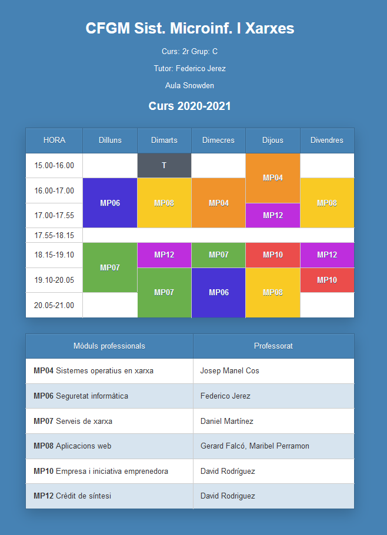

<meta charset="utf-8">
<meta name="viewport" content="width=device-width, initial-scale=1">
<script src="https://cdn.jsdelivr.net/npm/clipboard@2.0.6/dist/clipboard.min.js"></script>
<script type="module" src="/sofi/js/script.js"></script>
<link rel="stylesheet" href="/sofi/css/estil.css">


<header>
    <h1>Taules HTML</h1>

    <resum>En aquesta pràctica començarem amb les taules HTML</resum>

    <p>Segueix aquests tutorials de la <strong>Mozilla Developer Network</strong>:</p>
   
    <ul>
        <li><a href="https://developer.mozilla.org/en-US/docs/Learn/HTML/Tables/Basics">
            Fonaments de la taula HTML
        </a>
    </ul>
</header>
<section>
    <h2>Desenvolupament de la pràctica</h2>
    <p>La pràctica consisteix a crear una web amb l'horari del curs, i una altra web amb el llistat d'alumnes.</p>

    <h3>Horari</h3>
    <check>El desenvolupament de la web amb l'<strong>horari</strong> haurà de complir, al menys, els següents criteris:</check>
    <ul>
        <li>
           Caldrà utilitzar els <strong>elements</strong>
           <ul>
               <li><w>table</w></li>
               <li><w>tr</w></li>
               <li><w>th</w></li>
               <li><w>td</w></li>
           </ul>
        </li>
        <li>
            Caldrà utilitzar els <strong>atributs</strong>
            <ul>
                <li><w>colspan</w></li>
                <li><w>rowspan</w></li>
            </ul>
         </li>
                </li>
                <li>
                    Caldrà utilitzar, al menys, les següents <strong>propietats</strong> CSS:

                    <ul>
                        <li><w>font-family</w></li>
                        <li><w>color</w></li>
                        <li><w>background-color</w></li>
                        <li><w>text-align</w></li>
                        <li><w>padding</w></li>
                        <li><w>margin</w></li>
                    </ul>

                    <ul>
                        <li><w>width</w></li>
                        <li><w>border-collapse</w></li>
                        <li><w>border</w></li>
                    </ul>
                </li>

                <li>
                    Caldrà utilitzar les següents <a href="https://developer.mozilla.org/en-US/docs/Web/CSS/Pseudo-classes">pseudo classes</a>:
                    <ul>
                        <li><w>first-child</w></li>
                        <li><w>last-child</w></li>
                        <li><w>nth-child(odd)</w></li>
                    </ul>
                </li>
            </ul>
        </li>
    </ul>
    <h4>Exemple:</h4>
    
      
    <h3>Alumnes</h3>

    <p>Per al llistat d'alumnes s'ha d'utilitzar com a base el codi d'aquest repository: 
        <a href="https://github.com/smxm8/table">https://github.com/smxm8/table</a>
    </p>

    <h4>Exemple:</h4>
    
</section>